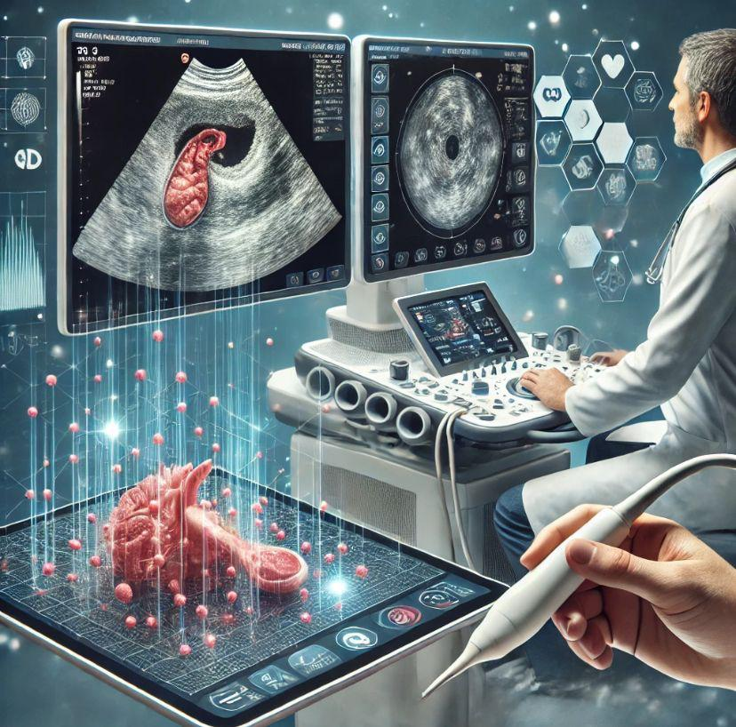
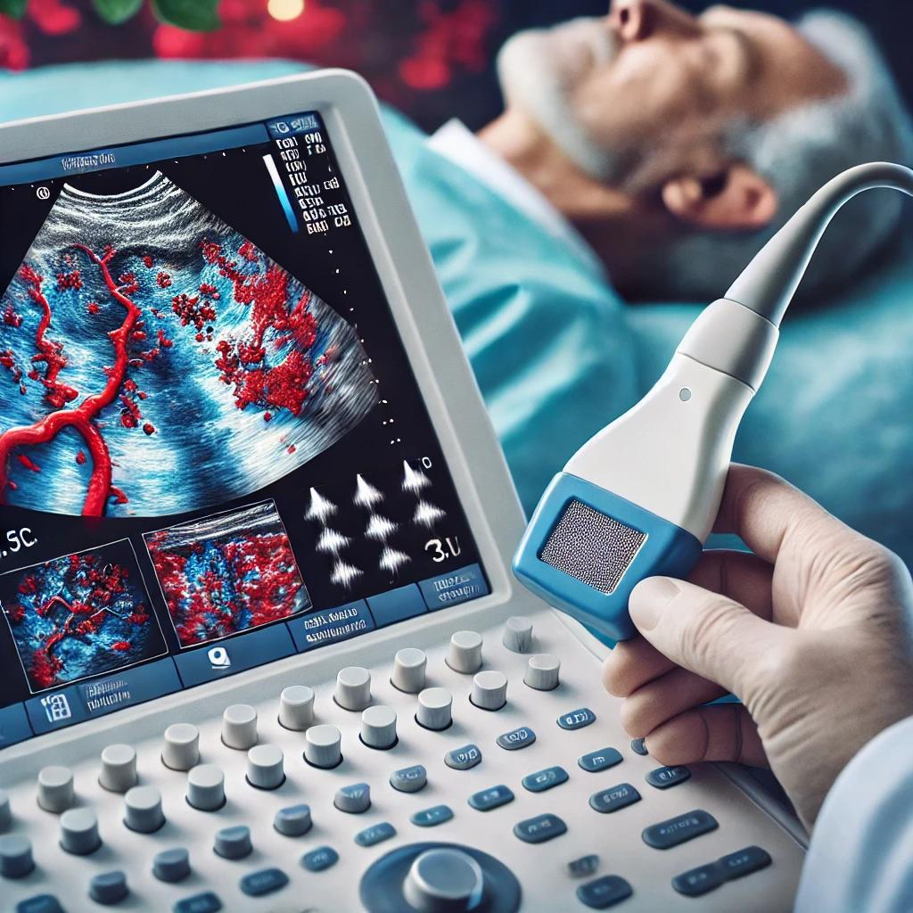

O desenvolvimento do ultrassom médico ocorreu ao longo do século XX, fundamentado em descobertas científicas e avanços tecnológicos significativos. Em 1880, os irmãos Pierre e Jacques Curie descobriram que certos cristais, como o quartzo, geram carga elétrica quando submetidos à pressão mecânica. Esse fenômeno, chamado piezoeletricidade, é essencial para a geração e detecção de ondas ultrassônicas.
Durante a Primeira Guerra Mundial, Paul Langevin aplicou ondas sonoras de alta frequência na detecção de submarinos, criando o sonar. Essa tecnologia demonstrou a capacidade das ondas ultrassônicas de penetrar meios líquidos e sólidos, estabelecendo as bases para futuras aplicações médicas.
Em 1942, o neuropsiquiatria austríaco Karl Dussik foi pioneiro no uso do ultrassom na medicina diagnóstica, empregando-o para localizar tumores cerebrais e medir o tamanho dos ventrículos cerebrais. Na década de 1950, o médico escocês Ian Donald introduziu a tecnologia na obstetrícia, desenvolvendo o primeiro scanner ultrassonográfico para visualizar fetos, revolucionando o acompanhamento pré-natal.
Nas décadas de 1970 e 1980, a tecnologia de ultrassom evoluiu com a introdução do modo 2D, permitindo imagens bidimensionais mais detalhadas e precisas dos órgãos internos. Nos anos 2000, surgiram as tecnologias de ultrassom 3D e 4D, que proporcionaram visualizações tridimensionais e em tempo real das estruturas internas, ampliando as possibilidades diagnósticas e terapêuticas.
E atualmente, o ultrassom é amplamente utilizado na medicina devido à sua natureza não invasiva, segurança e capacidade de fornecer imagens em tempo real, sendo essencial em diversas especialidades médicas.
Aplicações Clínicas do Ultrassom
A ultrassonografia é amplamente utilizada na medicina para diagnosticar várias condições. Na obstetrícia, monitora o desenvolvimento fetal e detecta anomalias congênitas. Na ginecologia, avalia o útero, ovários e trompas, sendo essencial para diagnosticar cistos e miomas. Em medicina interna, é usada para diagnosticar doenças hepáticas, renais e da vesícula biliar, permitindo visualizar órgãos internos de forma não invasiva.
Na radiologia e ortopedia, ajuda a identificar lesões musculoesqueléticas e é usada em procedimentos guiados por imagem. Também é valiosa em emergências pela sua portabilidade e rapidez.
Princípios Físicos do Ultrassom
O ultrassom é um método de diagnóstico por imagem que utiliza ondas sonoras de alta frequência (entre 1 e 15 MHz). Baseia-se em princípios físicos como a propagação, reflexão, absorção e refração das ondas acústicas. Quando um feixe sonoro encontra interfaces entre tecidos de diferentes densidades ou elasticidades, parte da energia é refletida, criando ecos que são captados pelo transdutor e convertidos em imagens bidimensionais.
O transdutor é o dispositivo central, funcionando com cristais piezoelétricos que transformam pulsos elétricos em ondas mecânicas (som) e vice-versa. Ele emite pulsos sonoros, que retornam como ecos ao encontrar superfícies internas do corpo. Esses ecos são processados eletronicamente, formando imagens em escala de cinza, onde estruturas líquidas aparecem como áreas escuras (aneicóicas) e ossos ou gases como áreas claras (hiperecóicas).
Modos específicos, como o Doppler, permitem analisar o fluxo sanguíneo e suas características. Tecnologias mais recentes, como a elastografia, avaliam a rigidez dos tecidos, auxiliando na identificação de doenças. O equipamento pode incluir transdutores variados para diferentes finalidades, como exames ginecológicos, abdominais ou cardíacos.
A formação de imagens depende do fenômeno de “pulso-eco”, onde as ondas refletem em diferentes profundidades, dependendo das propriedades acústicas do tecido. O ultrassom é amplamente utilizado por ser seguro, sem o uso de radiação ionizante, e permite exames em tempo real com múltiplas aplicações na medicina.
Tecnologia do Ultrassom
Os aparelhos de ultrassom evoluíram significativamente, passando de imagens 2D para 3D e 4D, melhorando a visualização de estruturas e movimentos em tempo real. A miniaturização permitiu o desenvolvimento de dispositivos portáteis, ampliando o acesso. A qualidade das imagens também aumentou, com transdutores mais sensíveis e algoritmos avançados.
Inovações como a eletrografia e a inteligência artificial auxiliam na detecção precoce de doenças. Além do diagnóstico, o ultrassom é utilizado em terapias, como o HIFU, para tratar tumores sem cirurgia. Sua acessibilidade e segurança continuam a torná-lo essencial na medicina.

Ultrassom Doppler
O ultrassom Doppler é uma técnica que usa o efeito Doppler para avaliar o fluxo sanguíneo em tempo real. Ele detecta mudanças na frequência das ondas sonoras refletidas pelas células sanguíneas em movimento, permitindo medir a direção e a velocidade do fluxo. Suas principais aplicações incluem a detecção de doenças vasculares, avaliação cardíaca, monitoramento da saúde fetal e identificação de tromboses.
Há três tipos principais: Doppler contínuo, pulsado e colorido, cada um com usos específicos para diferentes condições.

O Futuro do Ultrassom
O ultrassom médico tem evoluído com várias inovações tecnológicas. A integração com Inteligência Artificial (IA) está melhorando a precisão diagnóstica e facilitando a análise de imagens, especialmente em áreas com falta de especialistas. A miniaturização dos equipamentos tornou possível o uso de ultrassom portátil, permitindo exames em locais remotos.
O ultrassom 3D e 4D tem proporcionado imagens mais detalhadas e dinâmicas, úteis para diagnósticos precoces, especialmente em obstetrícia e cardiologia. Além disso, o ultrassom terapêutico está sendo utilizado para tratar lesões e aliviar dores, oferecendo uma alternativa não invasiva.
A elastografia por ultrassom também tem se destacado, permitindo a avaliação da rigidez dos tecidos e auxiliando no diagnóstico de doenças como o câncer. Por fim, a combinação do ultrassom com outras tecnologias, como a ressonância magnética, está ampliando a precisão dos diagnósticos médicos.
Curiosidades sobre Ultrassom
Som inaudível para humanos: O ultrassom utiliza ondas sonoras de alta frequência, geralmente acima de 20.000 Hz, que estão além do alcance da audição humana.
Sem radiação: Diferentemente de exames como raios-X ou tomografias, o ultrassom não emite radiação ionizante, tornando-o seguro para gestantes e bebês.
Origem na natureza: A ideia do ultrassom foi inspirada na ecolocalização usada por morcegos e golfinhos para navegar e caçar.
Velocidade do som varia nos tecidos: As ondas sonoras viajam mais rápido em tecidos sólidos (como ossos) do que em líquidos (como o sangue), e o ultrassom usa essas diferenças para criar imagens detalhadas.
Outras aplicações não médicas: Além da medicina, o ultrassom é usado em indústrias para limpeza de peças, detectar falhas em materiais e até para criar imagens submarinas (sonares).
Fontes:
Greelane - História do Ultrassom na Medicina
UFRGS - Ecografia
Juan Pablo Cazajus - A História do Ultrassom na Medicina
USECIA - Evolução dos Equipamentos de Ultrassom
Google Health
Rabisco da História - A Tecnologia do Futuro
Rabisco da História - Novas Tecnologias de Ultrassom